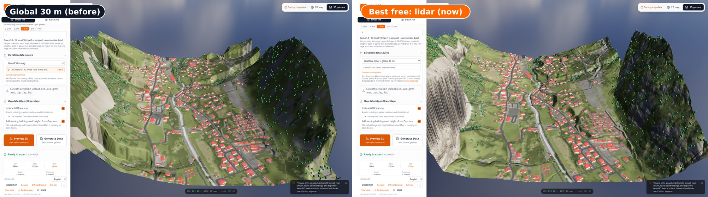
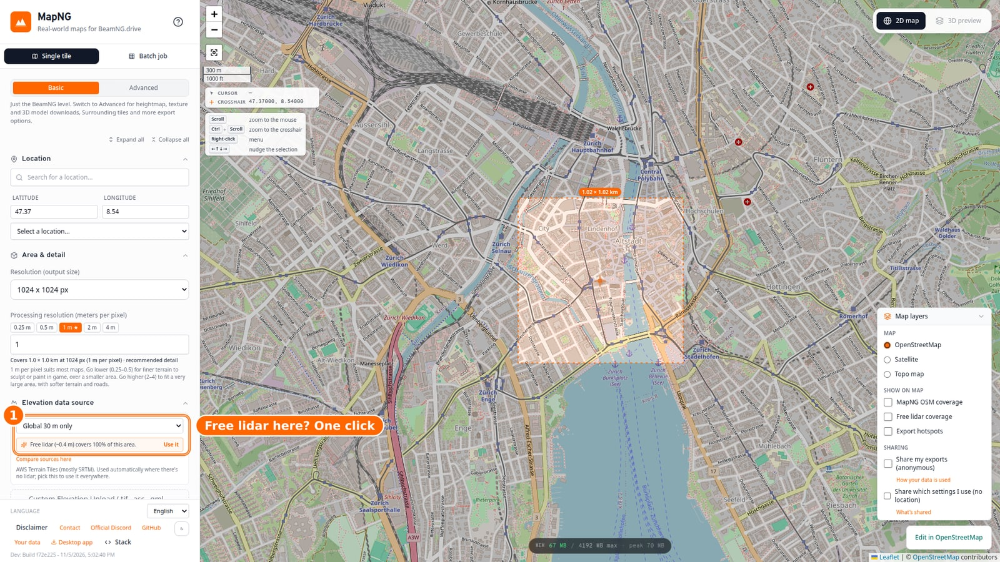
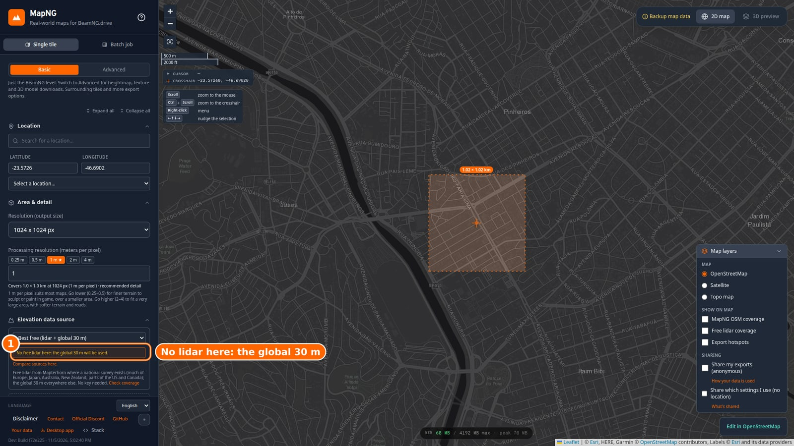
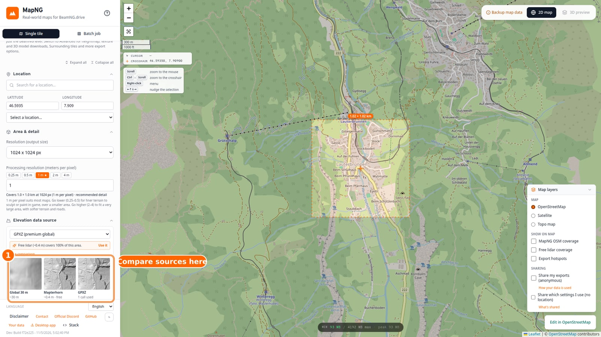
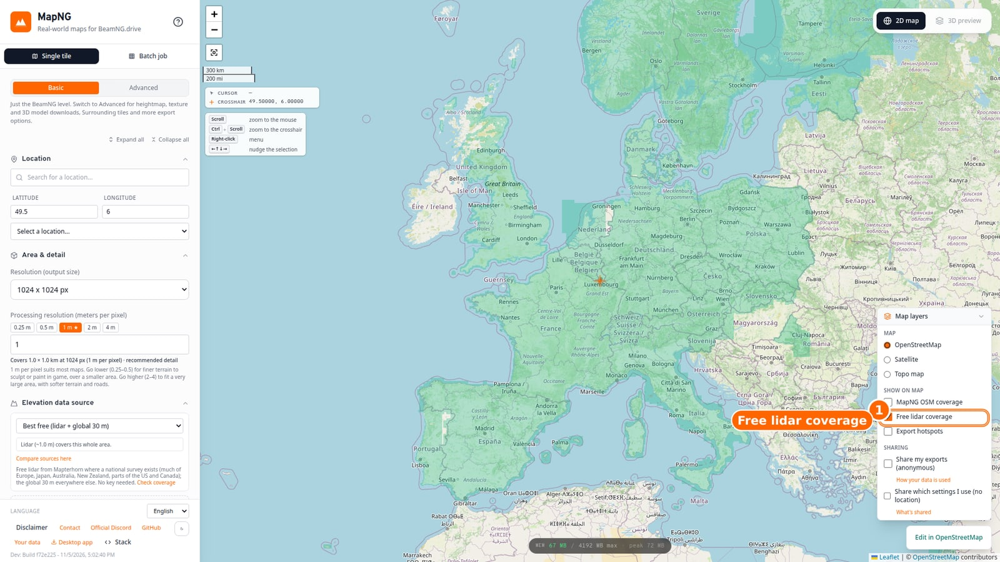

MapNG
MapNGUntil now, MapNG's free elevation was a 30 m global dataset: fine for hills, soft and blurry up close. Lidar (laser surveys flown by national mapping agencies) shows the real ground down to about a metre, but getting it meant a paid key or a country-specific download. As of 0.2.6, MapNG uses free lidar wherever it exists, in the browser and in the desktop app.
🏔️ Free lidar, chosen for you

The new default elevation source is called Best free (lidar + global 30 m). It comes from Mapterhorn, an open project that collects 155 national and global elevation datasets, all under open licences:
- Lidar where a national survey exists: much of Europe (England, Scotland and Wales at 1 m, Germany at 1 m, Switzerland to 0.5 m, France, Spain, the Netherlands, Austria and more), Japan, Australia, New Zealand, and parts of the US and Canada.
- The global 30 m everywhere else, the same data MapNG has always used, so nothing gets worse where there's no lidar.
- MapNG picks the finest detail that's useful for your map's resolution, and fills the edge of a survey from the next coarser lidar, never from the 30 m.
We checked it against professional lidar in 15 cities: where both have lidar, it matches GPXZ's lidar to within 0.1–2.5 m. Against the old 30 m data, Sydney's error dropped from 21 m to 0.5 m.
💡 MapNG tells you what's available

Under the elevation source, a small hint checks your selection as you move the map:
- On another source, if free lidar covers your area it says so, with how fine it is, and a one-click Use it.
- On Best free, it says what your area gets, or that there's no lidar there and the global 30 m will be used.
- GPXZ users can also check which GPXZ dataset covers the area. That one runs only when you click, since it uses one request from your plan.

🔍 Compare the sources yourself

Compare sources here draws a 500 m square at your selection's centre from each source, side by side: the global 30 m (smoothed the way MapNG builds levels from it), Mapterhorn, and, if you ask and have a key, GPXZ. You see the difference before you generate anything.
🗺️ See where free lidar exists

Turn on Free lidar coverage under Map layers to see where free high-resolution elevation exists, worldwide. It's drawn from a small index that ships with MapNG, so it costs nothing while you pan.
🧹 Smaller changes
🙏 Thanks to Mapterhorn
The free lidar comes from Mapterhorn, by Oliver Wipfli and contributors, funded by the EU's NGI0 programme through NLnet. They do the hard part: collecting 155 national datasets under open licences into one consistent set of tiles. Every level built from them credits them and the national sources in its export report; the full list is on their attribution page.
Heads-up: the Windows build still isn't code-signed. If SmartScreen warns you, choose More info, then Run anyway. Code-signing is in progress.
Try your favourite place with Best free and tell me what you see. Post in the MapNG Discord or open a GitHub issue. 🧡